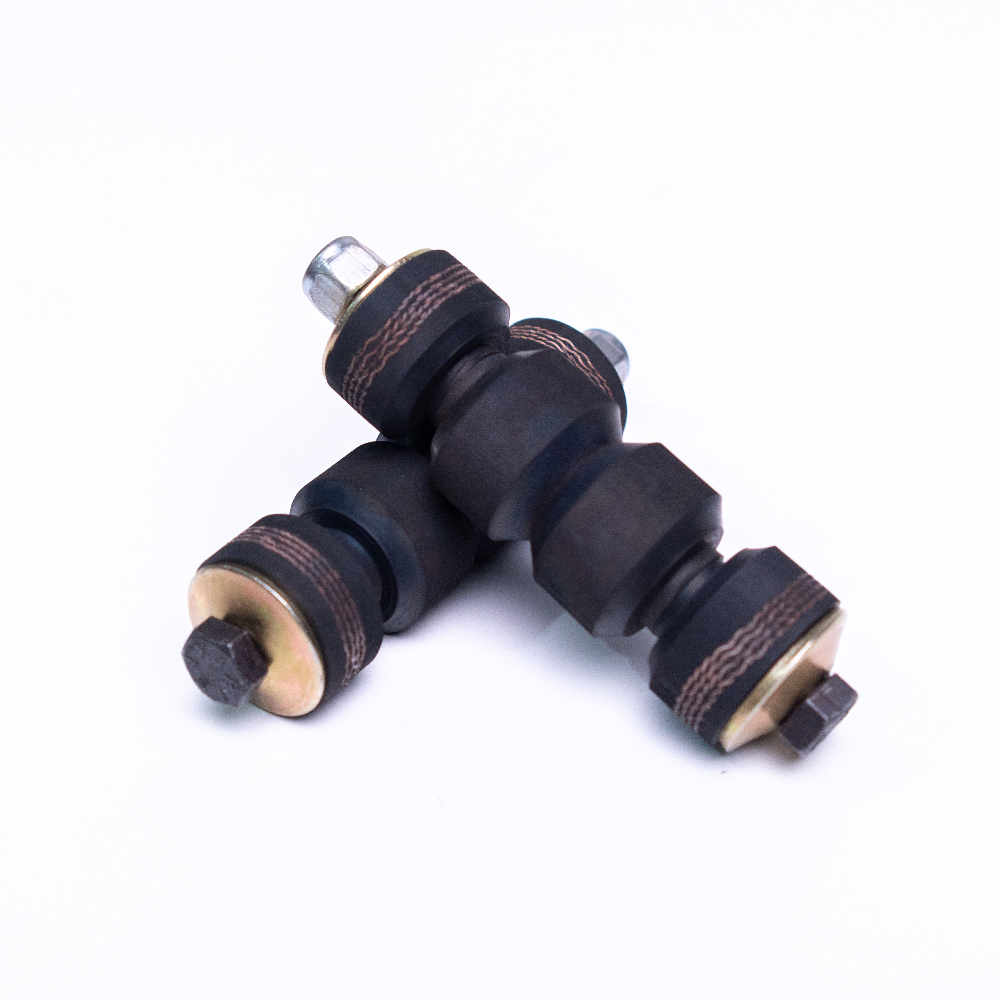

BIELETAS
DIANTEIRAS.
S10 / Blazer · 1995 a 2011

KIT1000602
Bieletas no kit.
Confira a aplicação com nossa equipe.
S10 / Blazer · 1995 a 2011

KIT10006Bieletas no kit.
Confira a aplicação com nossa equipe.